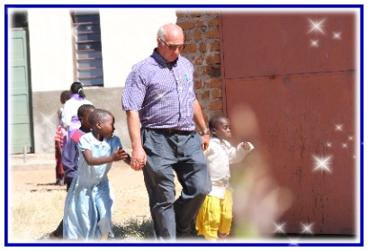

E sedutosi di fronte al tesoro, osservava come la folla gettava monete nel tesoro. E tanti ricchi ne gettavano molte. Ma venuta una povera vedova vi gettò due spiccioli, cioè un quattrino. Allora, chiamati a sè i discepoli, disse loro: "In verità vi dico: questa vedova ha gettato nel tesoro più di tutti gli altri. Poichè tutti hanno dato del loro superfluo, essa invece, nella sua povertà, vi ha messo tutto quello che aveva, tutto quanto aveva per vivere" - Marco 12,41.
Per le vostre offerte potete appoggiarvi ai seguenti conti correnti bancari indicando la causale della Vostra donazione:
BANCA POPOLARE DI SONDRIO
Filiale di Edolo (BS)
ABI: 05696
CAB: 54470
CIN: O
IBAN: IT51O0569654470000055555X61
CASSA PADANA
Filiale di Malonno (BS)
ABI: 08340
CAB: 54710
CIN: S
IBAN: IT98S0834054710000000200628
BANCA DI VALLE CAMONICA
Filiale di Cedegolo (BS)
ABI: 03244
CAB: 54310
CIN: M
IBAN: IT72M0324454310000000007300
Si precisa che gli importi vengono versati a favore di organizzazione non lucrativa di attività sociale senza finalità commerciali, siamo disponibili al rilascio della relativa certificazione da detrarre in fase di dichiarazione dei redditi.
GRAZIE alla scelta per la destinazione del 5 per mille abbiamo incassato i seguenti importi:
Anno 2008 n° scelte: 184 per un importo totale di € 4.635,58
Anno 2009 n° scelte: 183 per un importo totale di € 4.635,01
Continuate a firmare l'apposita casella del 730, Unico o CUD riportante l'opzione 5 per mille, indicando il codice fiscale dell' ASSOCIAZIONE PAMOYA "INSIEME PER CRESCERE"
Codice Fiscale: 90013120176
Tale scelta non comporterà per il contribuente nessun onere aggiuntivo, in quanto si tratta di destinare una quota di tasse che andrebbe comunque allo Stato.
Ringraziamo davvero di cuore tutti coloro che aiutano a sostenere le nostre attività.
Grazie
Associazione Pamoya-Onlus "Insieme per crescere"